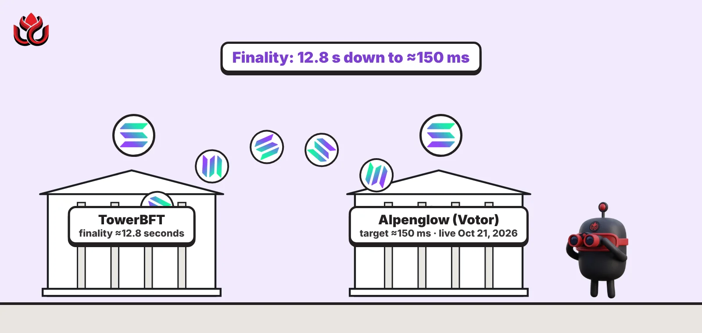
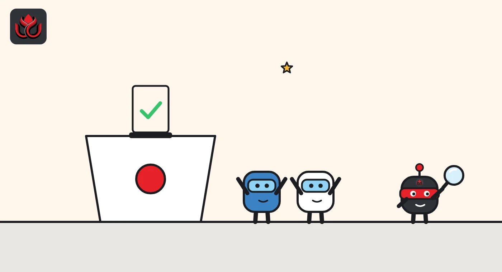
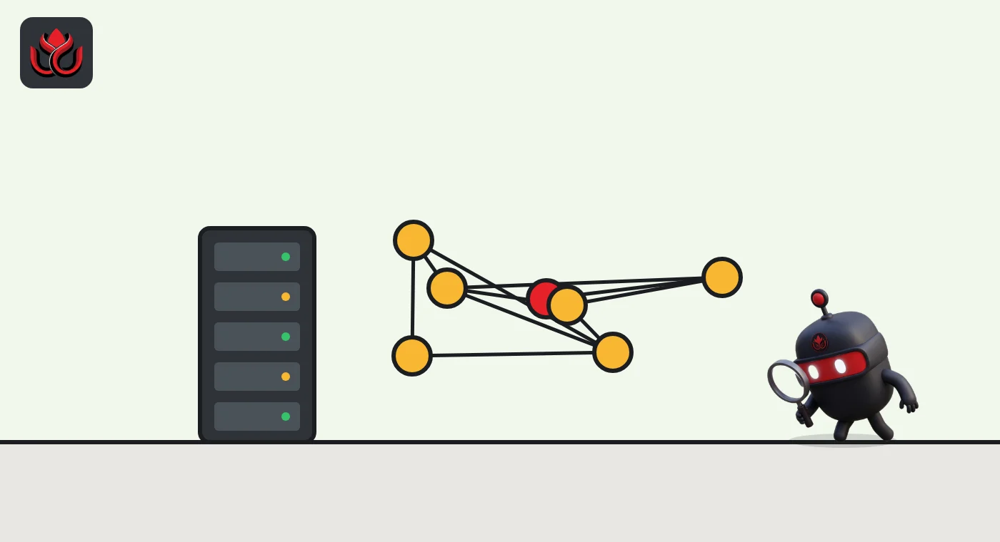

What is Solana? Alpenglow explained, from 12.8-second finality to a 150 ms goal
Alpenglow is Solana's new consensus protocol. Its first part, Votor, went live on mainnet on October 21, 2026, replacing TowerBFT and cutting the time for a transaction to become final from about 12.8 seconds to a target of about 150 milliseconds.

Key points
- Solana is a proof-of-stake blockchain where validators take turns producing blocks in short time slots, now 200 milliseconds long.
- Alpenglow's first phase, Votor, became Solana's consensus on mainnet on October 21, 2026, at about 9:36 a.m. ET. Solana says the handoff took about 900 milliseconds.
- Finality dropped from about 12.8 seconds under TowerBFT to a target of about 150 milliseconds. Solana calls that an expectation, not a constant.
- Rotor, the second phase that changes how blocks spread across the network, is not live and has no date.
- Users need to do nothing. Validators now pay a flat admission fee of 0.8 SOL per epoch instead of vote transaction fees.
What DeepSea's data shows
DeepSea's SOL page showed the token at $106.84 on November 2. Among the perpetual futures traders it tracks, $187.42 million was long SOL against $38.94 million short, with average leverage of 15.8x, the highest of the large tokens we checked.
On exchanges, DeepSea's Binance page counts $1.50 billion of Binance's tracked holdings on Solana.
Data: DeepSea (desea.io), checked November 2, 2026, 7:58 a.m. ET.
What is Solana?
Solana is a layer-1 blockchain: it runs its own network, with SOL as its native token. Like Ethereum, it uses proof of stake, which means validators lock up SOL and the network weighs their votes by how much stake they hold. Each short window of time is a slot, and one validator, the leader, produces the block for that slot.
Solana's Alpenglow page says slots were cut from 400 milliseconds to 200 milliseconds in a separate change. Programs on Solana run in the Solana Virtual Machine (SVM), and Solana says execution, the SVM and fees are unchanged by Alpenglow.
What is Alpenglow?
Alpenglow is Solana's new consensus protocol, the set of rules validators use to agree on which blocks are final. It has two parts. Solana's own account described them in May 2025: Votor, which finalizes blocks in a single round if 80% of stake is online, and Rotor, a faster way to spread blocks across validators.
The plan went through Solana's governance process as SIMD-0326, posted on August 14, 2025. Under the voting rules in that post, it needed yes votes of at least two-thirds of yes plus no votes, with a 33% quorum.

How does Votor work?
Under the old system, TowerBFT, validators sent their votes as ordinary transactions inside blocks, and a block took about 12.8 seconds to become final. Under Votor, according to Solana's upgrade page, validators send votes directly to each other and bundle them into certificates. Votes no longer sit in blocks.
- Fast path: if at least 80% of stake approves a block in one round, it is final.
- Slow path: otherwise a second round runs with 60% thresholds.
- Fault tolerance: Solana says the design tolerates 20% malicious stake plus another 20% offline.
Proof of History, the clock-like hash chain Solana was known for, no longer paces block production. Votor's timeouts and certificates do that job. One practical side effect: the "confirmed" and "finalized" states now mean the same thing, and Solana plans to remove "confirmed" later.
When did Alpenglow go live?
Votor activated at the start of epoch 1064 on October 21, 2026, at about 9:36 a.m. ET. The network kept running the old TowerBFT for the first 5,000 slots of the epoch, about 18 minutes. The last TowerBFT block was slot 459,652,999, and Alpenglow consensus began at slot 459,653,000. Solana says the handoff itself took about 900 milliseconds. Devnet had made the switch earlier, on September 25, 2026. LC Insight covered the day in its news report.
Solana's page sets the finality target at about 150 milliseconds and calls it an expectation that varies with how stake is spread. It also cites finality "99%" faster than TowerBFT.

What else changed under the hood?
Several smaller changes came with Votor, all listed on Solana's upgrade page:
- Time on chain. With Proof of History ticks gone from the ledger, the leader now sets the Clock timestamp within a bounded range. Solana tells developers to recheck any program that depends on how closely that timestamp tracks real time.
- Several candidate blocks per slot. One slot can now hold more than one candidate bank (a bank is a node's view of the chain at a slot). Data services should buffer by slot and bank ID and keep the one that is confirmed.
- Detecting the switch. Tools can call getAgGenesisCert or run the alpenglow-genesis-info command, and Solana says to rely on that instead of dates or version numbers.
- Validator revenue. Under SIMD-0232, validators can route block revenue to their vote account to help pay the admission ticket. The change takes two epochs to apply.
The original SIMD-0326 post in 2025 promised latency of roughly 100 to 150 milliseconds. The live target of about 150 milliseconds sits at the top of that range.
What changed for validators?
Under TowerBFT, voting cost a validator about 1 SOL per epoch in transaction fees. Alpenglow replaces that with a Validator Admission Ticket: a flat 0.8 SOL per epoch, taken from the vote account and burned. The fee paid at the start of one epoch covers the next. A validator whose vote account cannot pay is left out for that epoch and earns no rewards. The original SIMD-0326 post had set the ticket at 1.6 SOL per epoch and said the figure might be revisited, so the live fee is half that.
For the migration, operators had to run version 4.3.2 of Agave, Jito-Solana or Harmonic Salsa. Solana says Firedancer and Frankendancer, two other validator clients, were not supported for the switch.
What does it mean for users and developers?
Users do not need to do anything. Signing and sending transactions work as before. Developers who only send transactions and read accounts need no changes either. Those running data pipelines have more work: Solana says one slot can now hold several candidate blocks, dashboards that count transactions must be re-baselined because vote transactions are gone, and apps should read "finalized" rather than "confirmed" and stop timing anything off Proof of History ticks.
What are the risks and what is still missing?
Rotor, the second half of Alpenglow, is not live. It would replace Turbine, Solana's current block propagation system, and has no scheduled date. Until it ships, the speed gains come from Votor alone. Client diversity is the other open point: Firedancer did not take part in the migration, so the switch ran on Agave-based clients.
There is also a new way for a validator to drop out. Under the admission ticket, a validator whose vote account runs short of 0.8 SOL above the rent-exempt minimum is not admitted for the next epoch: it cannot vote, cannot produce blocks and loses that epoch's rewards. Operators who forget to top up lose income, and if many did so at once, less stake would be voting, which makes the 80% fast path harder to reach.
LC Insight analysis
This section is our reading of the facts above, not a statement of fact.
- For builders, the bigger change is not raw speed but that confirmed and finalized now mean the same thing. Apps that waited about 13 seconds to treat a payment as final can rethink that wait.
- The pressure point is the 80% fast path. If enough stake is slow or offline, blocks fall back to the second round and finality stretches.
- Firedancer is the open question. A switch that ran only on Agave-based software leaves client diversity unresolved until Firedancer supports Alpenglow.
What's next
- A SIMD and date for Rotor.
- Firedancer support for Alpenglow.
- Removal of the "confirmed" commitment level in a later release.
Frequently asked questions
Did Solana stop during the Alpenglow switch?
No. Solana's upgrade page says the network moved from TowerBFT to Alpenglow at slot 459,653,000 on October 21, 2026, and that the handoff took about 900 milliseconds.
Is 150 milliseconds guaranteed?
No. Solana calls it a target that varies with stake distribution. Finality is fastest when 80% of stake votes in the first round.
Does Alpenglow change Solana fees for users?
Solana says execution, the SVM and fees are unchanged. The fee change is for validators, who now pay an admission ticket of 0.8 SOL per epoch.
What is Rotor?
Rotor is Alpenglow's planned replacement for Turbine, the system that spreads new blocks across validators. Solana lists it as a later phase with no date.
Disclaimer. This article is based on public information and the sources listed below as of the update time shown. It is for information only and is not investment, legal or tax advice. Figures may change as companies and authorities publish new data.